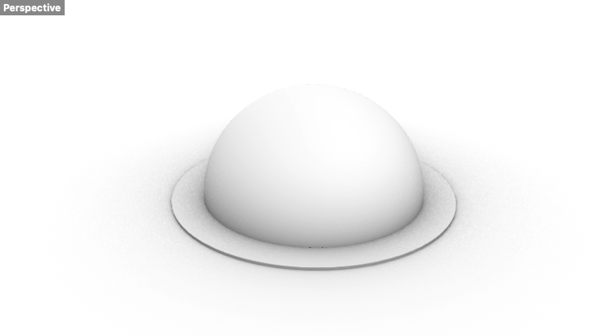

A5: Getting Meshy! and Lamps!
Part 1
Part 1 of this assignment asked us to modify the mesh of two STLs to product a single printable STL.
To begin, I explored files that interested me on Thingiverse. Two files that interested me were (1) a file of Yoshi and (2) a file of Groudon the legendary Pokemon. I am an avid gamer, and so these two were most in line with my interests.
Afterwards, I downloaded the STL files and imported them into Rhino. The files were already very detailed--as indicated by their number of meshes or polygons. Although the Groudon file was a closed mesh, the Yoshi file was an open mesh. Therefore, I reduced the mesh or number of polygons in order to transfer it into a closed mesh.
Transforming an open mesh to a closed mesh was a process of trial and error. Reducing the polygon count by 50% was not enough, and so I had to signficantly lessen the polygon count to 400 from 4000. Ultimately, I reached a Yoshi mesh that was closed.
To combine the two meshes, I positioned Yoshi as if the character was riding Groudon's back. I made sure the meshes did not overlap too much in case that would cause errors. Once I was satisfied with the positioning, I combined the meshes by using Boolean Union. This produced a single printable STL, which I then exported.

Link to my Rhino file
Link to my STL file
Part 2
Part 2 of this assignment asked us to create a lamp using digital fabrication techniques from prior weeks.
To begin, I ordered my lamp and sketched out a potential solution. For my lamp, I wanted to create one solid frame that would sit on top of the lantern by relying on its slope. I then wanted to hang rectangular blocks around the frame so that this would complete the lamp.
I soon realized the solid frame would be difficult to print. Therefore, instead of hooks to attach the rectangular frames, I decided to create holes on the solid frame that would act as the means of attachment. Afterwards, I started measuring the lantern before starting my design.


First, I created a dome with the slightly larger measurements to better fit the lantern. I used a 20 mm radius circle as the base of the dome and then extruded it to make it 3D. Then, I also created a tube that would give space for the rectangular shapes to be attached. Although I thought my measurements would be correct, I realized the dome was too circular in contrast to the shape of the lantern, which has a more sharp angle. Thus, I am working on fixing this part.

Credit
Thank you to Junchao's presentation and help during office hours.